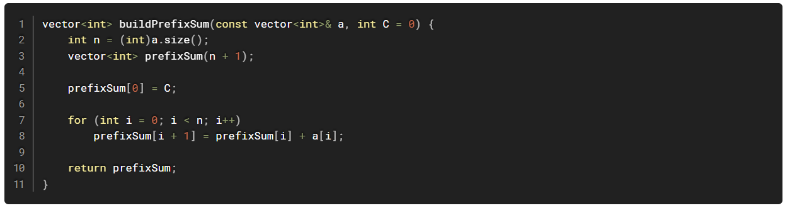
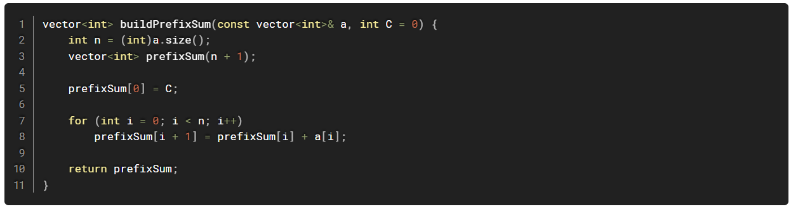

PREFIX SUM
Writer: Arya
INTRODUCTION
The prefix sum is a fundamental concept in computer science, particularly in array and algorithm design. It involves creating an auxiliary array where each element at index i represents the cumulative sum of the elements of the original array from the start up to index i. This technique is widely used to optimize queries about ranges in arrays, such as finding the sum of elements between two indices.
HOW IT WORKS
The first element of the prefix sum array is the same as the first element of the original array: prefix[0]=arr[0]
For each subsequent index i, the prefix sum is computed as: prefix[i]=prefix[i-1]+arr[i]
 

KEY APPLICATIONS
Range Sum Queries: The sum of elements between indices l anh r can computed as: sum(l,r)=prefix[r]-prefix[l-1] (l>0)
Efficient Updates: While prefix sums are static by nature, they can inspire structures like Fenwick Trees or Segment Trees for dynamic updates.
Problem Solving:
- Subarray sum problems
- Sliding window optimizations
- Algorithms involving cumulative properties (e.g., frequency counts)
CONCLUSIONS
Prefix sums are a powerful tool for optimizing queries and understanding array properties. They serve as a stepping stone for more advanced data structures and algorithms, making them a must-know concept in competitive programming and algorithm design.